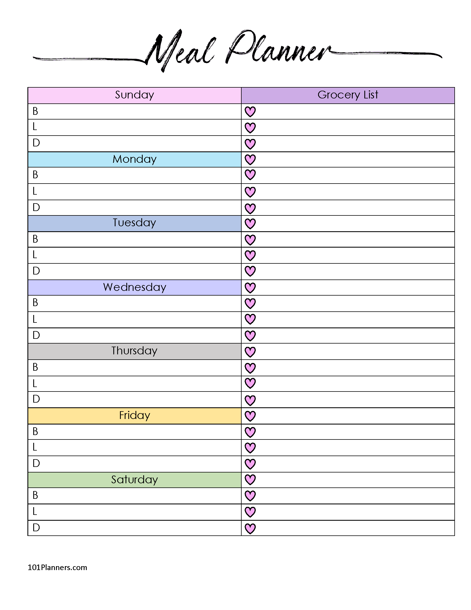

Let's cook
Oils, Vinegars and Condiments
- Oils: canola oil, extra-virgin olive oil, toasted sesame
- Vinegars: balsamic, distilled white, red wine, rice
- Ketchup
- Mayonnaise
- Dijon mustard
- Soy sauce
- Chili paste
- Hot sauce
-
Worcestershire
Seasonings
- Kosher salt
- Black peppercorns
-
Dried herbs and spices: bay leaves, cayenne pepper, crushed red
pepper, cumin, ground coriander, oregano, paprika, rosemary, thyme
leaves, cinnamon, cloves, allspice, ginger, nutmeg
-
Spice blends: chili powder, curry powder, Italian seasoning
- Vanilla extract
Canned Goods and Bottled Items
- Canned beans: black, cannellini, chickpeas, kidney
- Capers
- Olives
- Peanut butter
- Preserves or jelly
- Low-sodium stock or broth
- Canned tomatoes
- Tomatoes, canned and paste
- Salsa
-
Tuna fish
Grains and Legumes
- Breadcrumbs: regular, panko
- Couscous
- Dried lentils
- Pasta: regular, whole wheat
- Rice
- Rolled oats
-
One other dried grain: try barley, millet, quinoa or
wheatberries
Baking Products
- Baking powder
- Baking soda
- Brown sugar
- Cornstarch
- All-purpose flour
- Granulated sugar
-
Honey
Refrigerator Basics
- Butter
- Cheese: sharp cheddar, feta, Parmesan, mozzarella
- Large eggs
- Milk
- Plain yogurt
-
Corn tortillas
Freezer
-
Frozen fruit: blackberries, blueberries, peaches, strawberries
-
Frozen vegetables: broccoli, bell pepper and onion mix, corn,
edamame, peas, spinach
Storage Produce
- Garlic
- Onions (red, yellow)
- Potatoes
- Dried fruit: raisins, apples, apricots
- Nuts or seeds: almonds, peanuts, sunflower
